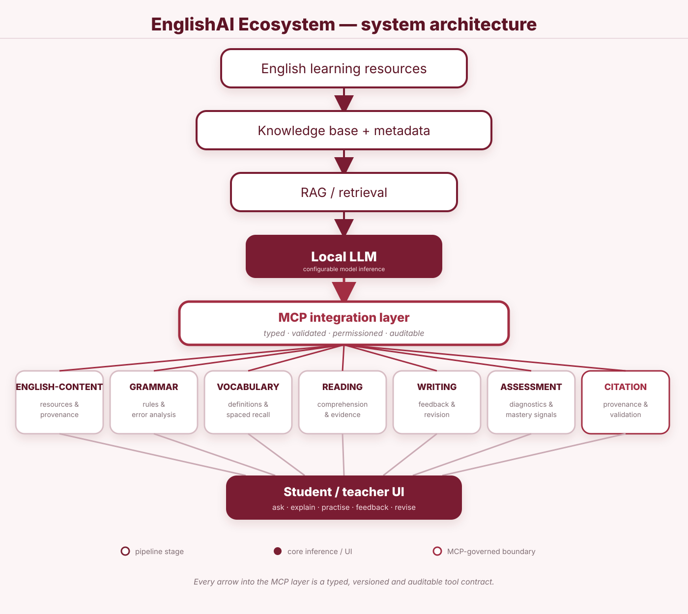

Capture intent
The learner or teacher submits a question, task or learning goal through the interface.
The architecture connects English learning resources to structured knowledge, RAG retrieval, configurable local-model inference and an MCP-governed tool layer. Specialist capabilities then feed the learner and teacher experience and the continuous practice loop.

The visual model above is the system map; this interactive view lets visitors inspect the function of each layer.
Authorised English-learning resources enter the ecosystem with enough metadata to support organisation, retrieval and provenance.
The learner or teacher submits a question, task or learning goal through the interface.
Knowledge and RAG identify relevant material and learner context for the task.
The configured local LLM uses the retrieved context to formulate a learning response.
The MCP layer exposes the specialist capability needed for grammar, vocabulary, reading, writing or assessment.
The learner applies the concept through an exercise, revision task or assessment activity.
Feedback and mastery signals inform the next activity and support personalised progression.
Each MCP capability can expose explicit inputs, outputs, versioning, permissions, validation and evidence requirements. This keeps the learning system extensible while preserving control and auditability.
Contribute directly through GitHub, or apply to join the project collaboration group.